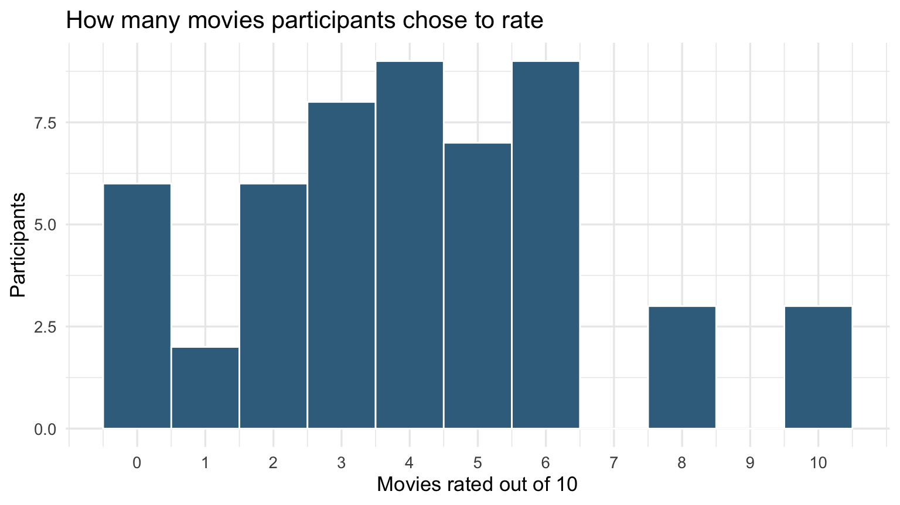
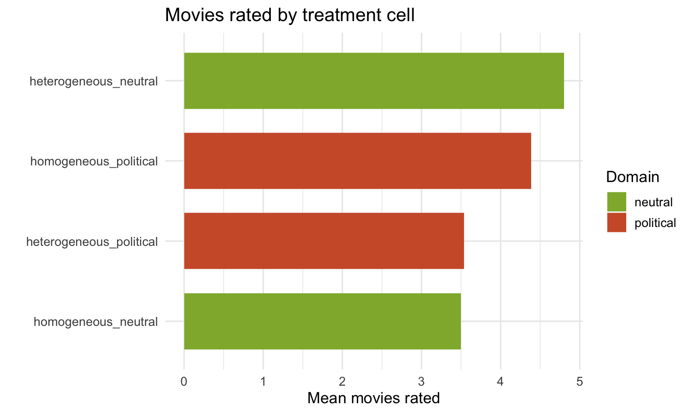
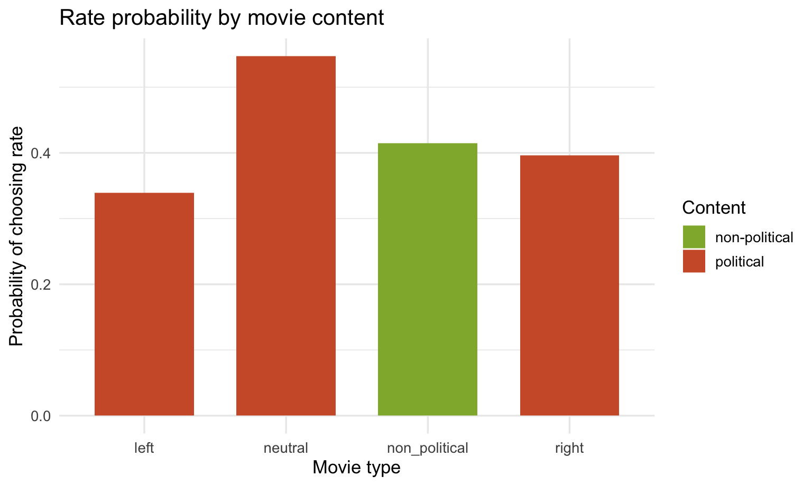
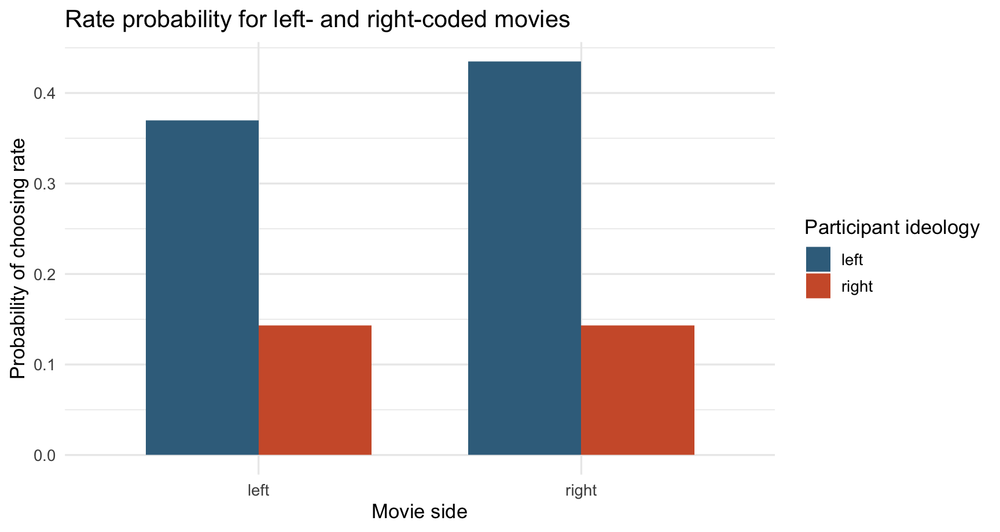
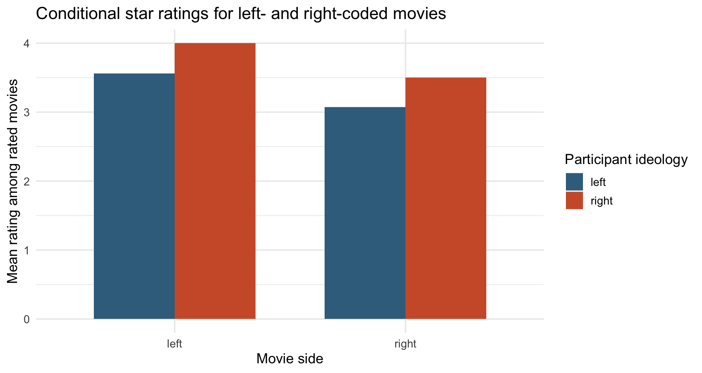
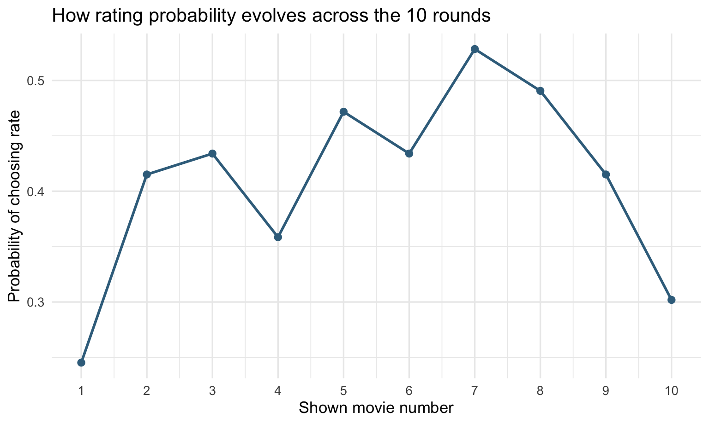
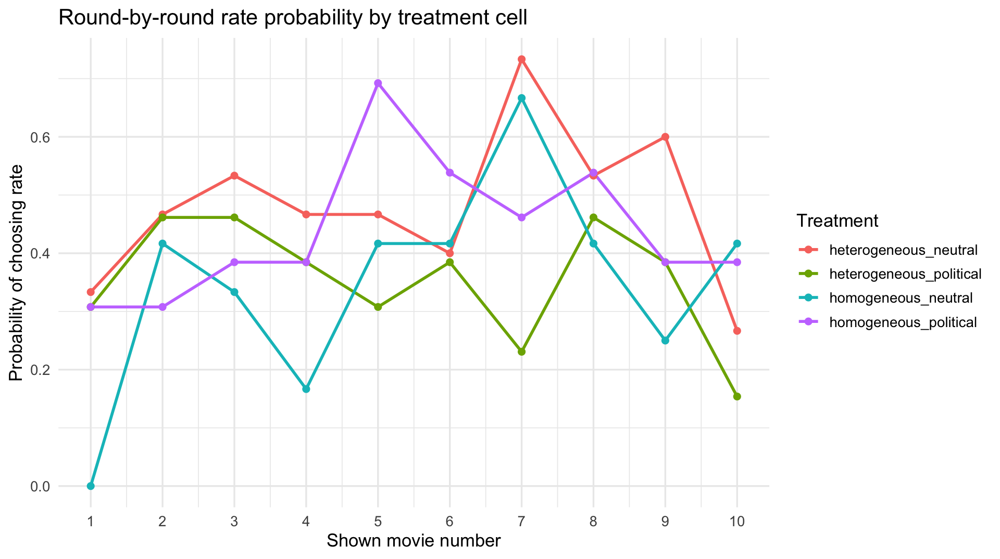
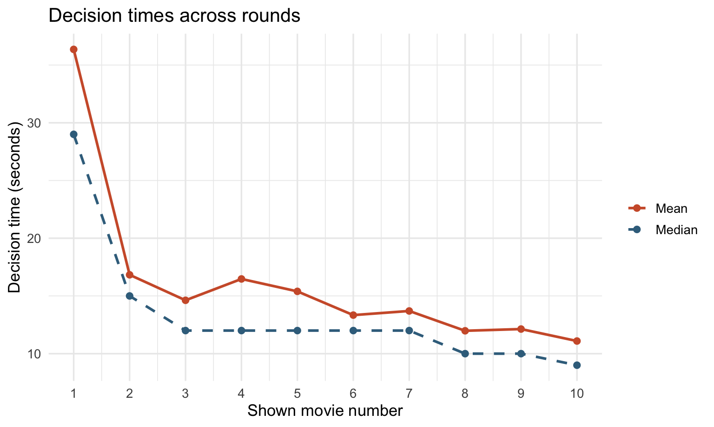
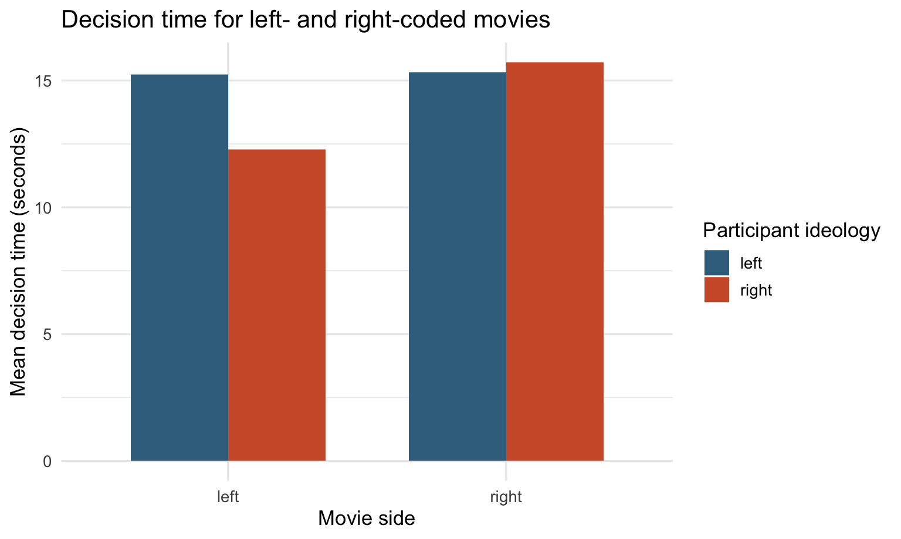

| Metric | Value |
|---|---|
| Participants in pre-experimental file | 200 |
| Participants who completed all 10 main rounds | 53 |
| Share of recruited participants who completed all 10 main rounds | 26.5% |
| Mean movies rated per completer | 4.09 |
| Median movies rated per completer | 4.00 |
| Mean rating probability across all decisions | 0.41 |
| Mean decision time (seconds) | 16.19 |
| Median decision time (seconds) | 12.00 |
Pilot Raw Data: Basic Analysis
This report uses main_2026-03-20.csv, pre_experimental_2026-03-20.csv, and PageTimes-2026-03-20.csv from /raw_data.
The analysis follows the hypotheses summarized in /text/presentation_BEEN.tex:
H1: participants should contribute less in homogeneous than heterogeneous matches.H2: that heterogeneous-homogeneous gap should be larger in the political domain.H3: contribution should differ for political versus non-political movie content.
All main analyses below use the 53 participants who completed all 10 main rounds. The pre-experimental file contains 200 recruited participants in total, so the completion share is 26.5%.
The raw export does not contain a usable direct left-right self-placement item in this pilot. The ideology sections therefore use a derived issue-based right-leaning score built from three political statements in the pre-treatment survey:
- abortion rights, reverse-coded
- immigration restriction
- climate-priority, reverse-coded
Higher values indicate a more right-leaning issue profile.
Sample Overview
How Many Movies Do People Rate?
Overall Distribution

| Movies rated | Participants | Share |
|---|---|---|
| 0 | 6 | 11.3% |
| 1 | 2 | 3.8% |
| 2 | 6 | 11.3% |
| 3 | 8 | 15.1% |
| 4 | 9 | 17.0% |
| 5 | 7 | 13.2% |
| 6 | 9 | 17.0% |
| 8 | 3 | 5.7% |
| 10 | 3 | 5.7% |
Variation Across the Four Treatment Cells
| Treatment | Match type | Domain | N | Mean movies rated | SD | Mean rate share |
|---|---|---|---|---|---|---|
| heterogeneous_neutral | heterogeneous | neutral | 15 | 4.80 | 3.45 | 0.480 |
| homogeneous_neutral | homogeneous | neutral | 12 | 3.50 | 2.81 | 0.350 |
| heterogeneous_political | heterogeneous | political | 13 | 3.54 | 1.61 | 0.354 |
| homogeneous_political | homogeneous | political | 13 | 4.38 | 1.89 | 0.438 |

Variation Across the Two Treatment Factors
| Factor | Level | N | Mean movies rated | SD | Mean rate share |
|---|---|---|---|---|---|
| match_type | heterogeneous | 28 | 4.21 | 2.78 | 0.421 |
| match_type | homogeneous | 25 | 3.96 | 2.37 | 0.396 |
| domain | neutral | 27 | 4.22 | 3.19 | 0.422 |
| domain | political | 26 | 3.96 | 1.78 | 0.396 |
Political Versus Non-Political Movie Content
This section speaks most directly to H3.
| Movie content | Movie side | Decisions | Rate probability | Mean rating if rated | Mean decision time (sec) |
|---|---|---|---|---|---|
| non-political | non_political | 265 | 0.415 | 3.59 | 17.06 |
| political | left | 106 | 0.340 | 3.58 | 14.85 |
| political | neutral | 53 | 0.547 | 4.03 | 16.19 |
| political | right | 106 | 0.396 | 3.10 | 15.37 |

Do Left-Wing Participants Rate Left-Wing Movies More Often or More Positively?
This is descriptive only. The ideology grouping is derived from issue positions, not from a direct self-placement item, because that field is blank in this pilot export. The right-leaning group is small, so these comparisons should be read cautiously.
| Ideology group | Participants |
|---|---|
| left | 46 |
| right | 7 |
| Participant ideology | Movie side | Decisions | Rate probability | Mean rating if rated | Mean decision time (sec) |
|---|---|---|---|---|---|
| left | left | 92 | 0.370 | 3.56 | 15.24 |
| left | right | 92 | 0.435 | 3.08 | 15.32 |
| right | left | 14 | 0.143 | 4.00 | 12.29 |
| right | right | 14 | 0.143 | 3.50 | 15.71 |


How Does Rating Probability Change from Movie 1 to Movie 10?
| Round | Decisions | Rate probability | Mean decision time (sec) | Median decision time (sec) |
|---|---|---|---|---|
| 1 | 53 | 0.245 | 36.36 | 29 |
| 2 | 53 | 0.415 | 16.83 | 15 |
| 3 | 53 | 0.434 | 14.62 | 12 |
| 4 | 53 | 0.358 | 16.47 | 12 |
| 5 | 53 | 0.472 | 15.40 | 12 |
| 6 | 53 | 0.434 | 13.34 | 12 |
| 7 | 53 | 0.528 | 13.70 | 12 |
| 8 | 53 | 0.491 | 11.98 | 10 |
| 9 | 53 | 0.415 | 12.13 | 10 |
| 10 | 53 | 0.302 | 11.09 | 9 |

Does the Over-Time Pattern Vary Across Treatments?
This section is the most relevant descriptive check for H1 and H2.

| Round | heterogeneous_neutral | heterogeneous_political | homogeneous_neutral | homogeneous_political |
|---|---|---|---|---|
| 1 | 0.333 | 0.308 | 0.000 | 0.308 |
| 2 | 0.467 | 0.462 | 0.417 | 0.308 |
| 3 | 0.533 | 0.462 | 0.333 | 0.385 |
| 4 | 0.467 | 0.385 | 0.167 | 0.385 |
| 5 | 0.467 | 0.308 | 0.417 | 0.692 |
| 6 | 0.400 | 0.385 | 0.417 | 0.538 |
| 7 | 0.733 | 0.231 | 0.667 | 0.462 |
| 8 | 0.533 | 0.462 | 0.417 | 0.538 |
| 9 | 0.600 | 0.385 | 0.250 | 0.385 |
| 10 | 0.267 | 0.154 | 0.417 | 0.385 |
How Much Time per Decision Do People Spend from Movie 1 to Movie 10?

The first round includes the transition from the pre-experimental stage into the main task, so it is usually longer than later rounds.
Do Left-Wing or Right-Wing Participants Spend More Time on Left- or Right-Wing Movies?
The table and figure below use only left-coded and right-coded movies. The timing is the time spent on the decision page, regardless of whether the participant eventually chose rate or skip.
| Participant ideology | Movie side | Decisions | Mean decision time (sec) | Median decision time (sec) |
|---|---|---|---|---|
| left | left | 92 | 15.24 | 12.5 |
| left | right | 92 | 15.32 | 11.0 |
| right | left | 14 | 12.29 | 9.0 |
| right | right | 14 | 15.71 | 12.0 |

Exported Files
This report also writes reusable CSVs to the project root:
pilot_raw_participant_level.csvpilot_raw_decision_level.csvpilot_raw_treatment_summary.csvpilot_raw_round_summary.csv